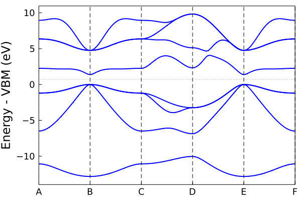
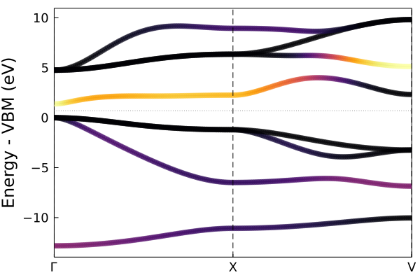
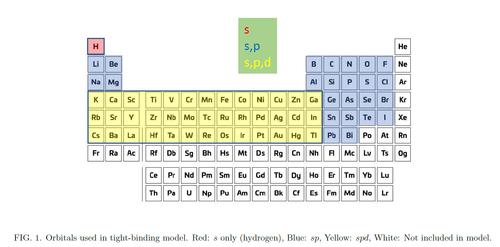

Running tight-binding calculations
How to run tight-binding calculations using the pre-fit tight-binding coefficients. Note, only elemental and binary systems are currently supported.
Running a julia function for the first time will compile the function. Future runs will be much faster.
Create a crystal object
Use makecrys to create a crystal from lattice vectors, atomic positions, and atom types:
using ThreeBodyTB
A = [2.1 2.1 0.0;2.1 0.0 2.1;0.0 2.1 2.1];
pos = [0.0 0.0 0.0];
types = ["Al"];
fcc_al = makecrys(A, pos, types)Units: Å A1= 2.10000 2.10000 0.00000 A2= 2.10000 0.00000 2.10000 A3= 0.00000 2.10000 2.10000 Al 0.00000 0.00000 0.00000
Current default units are Angstrom and eV. You can change the global units to atomic units with set_units(both="atomic") if you prefer.
Alternatively, you can read the positions from a simple POSCAR or Quantum Espresso input file.
rbcl = makecrys("../src/POSCAR_rbcl")Units: Å A1= 3.90963 -0.00000 0.00000 A2= -0.00000 3.90963 0.00000 A3= 0.00000 -0.00000 3.90963 Rb 0.00000 0.00000 0.00000 Cl 0.50000 0.50000 0.50000
Do a self-consistent calculation.
Gets the energy and charge density with scf_energy:
alp = makecrys("../src/POSCAR_alp")
energy, tbc_alp = scf_energy(alp);
println("The energy is $energy eV")Begin scf_energy------------- Load TB parameters from file prepare atoms ["Al", "P"] ----- Construct tight-binding model from crystal structure distances check_frountier CHECK FRONTIER - everything fine 2body 3body onsite make ----- 0.065024 seconds (1.64 M allocations: 118.413 MiB, 32.08% gc time) ------ Do SCF Mixing mode: pulay Get initial guess from tbc DQ: [0.0, -0.0] Parameters: smearing = 0.01 conv_thr = 1.0e-5, iters = 75, mix = 0.5, grid = missing START SCF ---------------- dq start[0.0, 0.0] SCF CALC 0001 energy -10.42350021 SCF CALC 0002 energy -10.24668598 en_diff: 1.768142E-01 dq_diff: 2.430874E+00 SCF CALC 0003 energy -10.24965650 en_diff: 2.970519E-03 dq_diff: 2.048571E-02 SCF CALC 0004 energy -10.25609985 en_diff: 6.443359E-03 dq_diff: 4.504717E-02 SCF CALC 0005 energy -10.25883441 en_diff: 2.734558E-03 dq_diff: 1.938020E-02 SCF CALC 0006 energy -10.26020629 en_diff: 1.371874E-03 dq_diff: 9.783404E-03 SCF CALC 0007 energy -10.26088960 en_diff: 6.833124E-04 dq_diff: 4.888346E-03 SCF CALC 0008 energy -10.26123074 en_diff: 3.411420E-04 dq_diff: 2.444346E-03 SCF CALC 0009 energy -10.26140118 en_diff: 1.704372E-04 dq_diff: 1.222178E-03 SCF CALC 0010 energy -10.26148636 en_diff: 8.518531E-05 dq_diff: 6.110918E-04 SCF CALC 0011 energy -10.26152895 en_diff: 4.258433E-05 dq_diff: 3.055466E-04 SCF CALC 0012 energy -10.26155024 en_diff: 2.129009E-05 dq_diff: 1.527734E-04 YES convergence in 12 iters, energy -10.261550238376099 eV dq = [-1.163, 1.163] END SCF ------------------ 0.485015 seconds (814.80 k allocations: 396.463 MiB, 14.42% gc time) scf_energy success, done The energy is -10.261550238376099 eV
This returns the (non-magnetic) atomization energy, and a tight-binding object with the TB matrix elements and SCF electron density calculated for post-processing.
Plot the band structure.
Using the tb_crys tight-binding object tbc_alp from above. Note: SCF must be done first.
plot_bandstr(tbc_alp, do_display=false);plot_bandstr align vbm color = blue markersize = 0 no display

Use do_display=true (the default) to produce an interactive plot. Here do_display is set to false because we are saving a static figure with savefig for the docs.
The default plot_bandstr just picks some random kpoints, but you can add your own kpath. We can also project onto the s orbital of Al.
kpath=[0.0 0.0 0.0; 0.5 0.5 0.5; 0.0 0.5 0.5];
knames=["Γ", "X", "V"];
plot_bandstr(tbc_alp, kpath=kpath, names=knames, npts=100, proj_orbs=[:s], proj_types=["Al"], do_display=false);proj_inds [1] plot_bandstr align vbm no display

You can also plot the DOS using dos
dos(tbc_alp, do_display=false);grid [14, 14, 14]
0.135595 seconds (71.70 k allocations: 73.312 MiB, 7.69% gc time)
Projection type: atomic
PROJ
("P", [5, 6, 7, 8], 4)
("Al", [1, 2, 3, 4], 4)
Project onto orbitals instead with proj_type=:orbs
Calculate force / stress
energy, force, stress, tbc = scf_energy_force_stress(tbc_alp);
println("energy $energy")
println()
println("Forces")
show(stdout, "text/plain", force)
println()
println("Stress")
show(stdout, "text/plain", stress)prepare atoms ["Al", "P"]
Calculate Force, Stress (no scf)
get_energy_force_stress_fft
1.054822 seconds (5.06 M allocations: 1.087 GiB, 37.90% gc time)
done
----
energy -10.261560882898987
Forces
2×3 Matrix{Float64}:
-1.37155e-11 -1.37151e-11 -1.37152e-11
0.0 0.0 0.0
Stress
3×3 Matrix{Float64}:
0.138527 0.0 0.0
0.0 0.138527 0.0
0.0 0.0 0.138527Can also be called directly on a new crystal structure instead of a tb_crys object.
Relax structure
Using relax_structure
crys_new, tbc_updated, energy, force, stress = relax_structure(alp);
println("Energy new $energy")
println()
println("Force")
show(stdout, "text/plain", force)
println()
println("Stress")
show(stdout, "text/plain", stress)prepare atoms ["Al", "P"]
relax_structure conv_thr 0.002 energy_conv_thr (Ryd) 0.0002
------
Do SCF
Mixing mode: pulay
Get initial guess from tbc
DQ: [0.0, -0.0]
Parameters:
smearing = 0.01 conv_thr = 1.0e-7, iters = 200, mix = 0.5, grid = missing
START SCF ----------------
dq start[0.0, 0.0]
SCF CALC 0001 energy -10.42350021
SCF CALC 0002 energy -10.24668598 en_diff: 1.768142E-01 dq_diff: 2.430874E+00
SCF CALC 0003 energy -10.24965650 en_diff: 2.970519E-03 dq_diff: 2.048571E-02
SCF CALC 0004 energy -10.25609985 en_diff: 6.443359E-03 dq_diff: 4.504717E-02
SCF CALC 0005 energy -10.25883441 en_diff: 2.734558E-03 dq_diff: 1.938020E-02
SCF CALC 0006 energy -10.26020629 en_diff: 1.371874E-03 dq_diff: 9.783404E-03
SCF CALC 0007 energy -10.26088960 en_diff: 6.833124E-04 dq_diff: 4.888346E-03
SCF CALC 0008 energy -10.26123074 en_diff: 3.411420E-04 dq_diff: 2.444346E-03
SCF CALC 0009 energy -10.26140118 en_diff: 1.704372E-04 dq_diff: 1.222178E-03
SCF CALC 0010 energy -10.26148636 en_diff: 8.518531E-05 dq_diff: 6.110918E-04
SCF CALC 0011 energy -10.26152895 en_diff: 4.258433E-05 dq_diff: 3.055466E-04
SCF CALC 0012 energy -10.26155024 en_diff: 2.129009E-05 dq_diff: 1.527734E-04
SCF CALC 0013 energy -10.26156088 en_diff: 1.064452E-05 dq_diff: 7.638676E-05
SCF CALC 0014 energy -10.26156621 en_diff: 5.322131E-06 dq_diff: 3.819339E-05
SCF CALC 0015 energy -10.26156887 en_diff: 2.661033E-06 dq_diff: 1.909670E-05
SCF CALC 0016 energy -10.26157020 en_diff: 1.330508E-06 dq_diff: 9.548349E-06
SCF CALC 0017 energy -10.26157086 en_diff: 6.652522E-07 dq_diff: 4.774175E-06
SCF CALC 0018 energy -10.26157119 en_diff: 3.326256E-07 dq_diff: 2.387087E-06
SCF CALC 0019 energy -10.26157136 en_diff: 1.663126E-07 dq_diff: 1.193544E-06
YES convergence in 19 iters, energy -10.261571360762517 eV dq = [-1.163, 1.163]
END SCF ------------------
starting vec
[0.0, 0.0, 0.0, 0.25, 0.25, 0.25, 0.0, 0.0, 0.0, 0.0, 0.0, 0.0]
Conj Grad START
START SCF ----------------
dq start[0.0, 0.0]
SCF CALC 0001 energy -10.26157144
SCF CALC 0002 energy -10.26157153 en_diff: 8.701624E-08 dq_diff: 6.244729E-07
YES convergence in 2 iters, energy -10.261571530935061 eV dq = [-1.163, 1.163]
END SCF ------------------
get_energy_force_stress_fft
0.870611 seconds (5.06 M allocations: 1.087 GiB, 12.95% gc time)
FCALL 1 en: -0.7542113224350956 (Ryd) fsum: 9.238855355689506e-13 ssum: 0.0026132419609586595 xxxxxxxxxxxxxxxxxxxxxxxxxxxxxxx
A1= +2.60000 +2.60000 +0.00000 | +0.13853 +0.00000 +0.00000
A2= +2.60000 +0.00000 +2.60000 | +0.00000 +0.13853 +0.00000
A3= +0.00000 +2.60000 +2.60000 | +0.00000 +0.00000 +0.13853
Al +0.00000 +0.00000 +0.00000 | -0.00000 -0.00000 -0.00000
P +0.25000 +0.25000 +0.25000 | +0.00000 +0.00000 +0.00000
START SCF ----------------
dq start[0.0, 0.0]
SCF CALC 0001 energy -10.77406936
SCF CALC 0002 energy -10.66263972 en_diff: 1.114296E-01 dq_diff: 6.133443E-01
SCF CALC 0003 energy -10.66341365 en_diff: 7.739346E-04 dq_diff: 3.594524E-03
SCF CALC 0004 energy -10.67104778 en_diff: 7.634124E-03 dq_diff: 3.581870E-02
SCF CALC 0005 energy -10.67379272 en_diff: 2.744942E-03 dq_diff: 1.304421E-02
SCF CALC 0006 energy -10.67515510 en_diff: 1.362376E-03 dq_diff: 6.507522E-03
SCF CALC 0007 energy -10.67583457 en_diff: 6.794725E-04 dq_diff: 3.253946E-03
SCF CALC 0008 energy -10.67617388 en_diff: 3.393097E-04 dq_diff: 1.627030E-03
SCF CALC 0009 energy -10.67634343 en_diff: 1.695482E-04 dq_diff: 8.135294E-04
SCF CALC 0010 energy -10.67642817 en_diff: 8.474744E-05 dq_diff: 4.067683E-04
SCF CALC 0011 energy -10.67647054 en_diff: 4.236706E-05 dq_diff: 2.033850E-04
SCF CALC 0012 energy -10.67649172 en_diff: 2.118186E-05 dq_diff: 1.016927E-04
SCF CALC 0013 energy -10.67650231 en_diff: 1.059051E-05 dq_diff: 5.084643E-05
SCF CALC 0014 energy -10.67650761 en_diff: 5.295166E-06 dq_diff: 2.542323E-05
SCF CALC 0015 energy -10.67651026 en_diff: 2.647540E-06 dq_diff: 1.271162E-05
YES convergence in 15 iters, energy -10.676510255924832 eV dq = [-0.949, 0.949]
END SCF ------------------
get_energy_force_stress_fft
0.808259 seconds (3.90 M allocations: 990.433 MiB, 17.93% gc time)
FCALL 2 en: -0.7847087451310859 (Ryd) fsum: 9.227630907280231e-9 ssum: 0.00019374308031405585 xxxxxxxxxxxxxxxxxxxxxxxxxxxxxxx
A1= +2.80318 +2.80318 +0.00000 | -0.01027 -0.00000 -0.00000
A2= +2.80318 +0.00000 +2.80318 | -0.00000 -0.01027 -0.00000
A3= +0.00000 +2.80318 +2.80318 | -0.00000 -0.00000 -0.01027
Al +0.00000 +0.00000 +0.00000 | -0.00000 -0.00000 -0.00000
P +0.25000 +0.25000 +0.25000 | +0.00000 +0.00000 +0.00000
MY CG quadratic linesearch iter 1 fn val: -0.7847087451310859 | rms grad: 0.05759798164164776 within_stepsize: false , old step: 0.3275195802771361 , new step_size: 0.10565147750875359
MY CG quadratic linesearch iter 2 fn val: -0.7847087451310859 | rms grad: 0.05759798164164776 within_stepsize: true , old step: 0.10565147750875359 , new step_size: 0.15847721626313038
START SCF ----------------
dq start[0.0, 0.0]
SCF CALC 0001 energy -10.68005485
SCF CALC 0002 energy -10.68005569 en_diff: 8.399086E-07 dq_diff: 4.092795E-06
YES convergence in 2 iters, energy -10.680055690575825 eV dq = [-0.959, 0.959]
END SCF ------------------
get_energy_force_stress_fft
0.927344 seconds (3.90 M allocations: 990.438 MiB, 31.00% gc time)
FCALL 3 en: -0.7849693296769005 (Ryd) fsum: 1.2198061221457809e-8 ssum: 0.00011614206339563123 xxxxxxxxxxxxxxxxxxxxxxxxxxxxxxx
A1= +2.79405 +2.79405 -0.00000 | -0.00616 -0.00000 -0.00000
A2= +2.79405 -0.00000 +2.79405 | -0.00000 -0.00616 -0.00000
A3= -0.00000 +2.79405 +2.79405 | -0.00000 -0.00000 -0.00616
Al -0.00000 -0.00000 -0.00000 | +0.00000 +0.00000 +0.00000
P +0.25000 +0.25000 +0.25000 | -0.00000 -0.00000 -0.00000
MY CG quadratic linesearch iter 3 fn val: -0.7849693296769005 | rms grad: 0.034191485087545964 within_stepsize: true , old step: 0.15847721626313038 , new step_size: 0.23771582439469557
START SCF ----------------
dq start[0.0, 0.0]
SCF CALC 0001 energy -10.68164643
SCF CALC 0002 energy -10.68164715 en_diff: 7.167380E-07 dq_diff: 3.539612E-06
YES convergence in 2 iters, energy -10.681647150688127 eV dq = [-0.968, 0.968]
END SCF ------------------
get_energy_force_stress_fft
0.678092 seconds (3.90 M allocations: 990.445 MiB, 10.57% gc time)
FCALL 4 en: -0.785086299795199 (Ryd) fsum: 5.897348932761092e-8 ssum: 4.1089258104637116e-5 xxxxxxxxxxxxxxxxxxxxxxxxxxxxxxx
A1= +2.78591 +2.78591 -0.00000 | -0.00218 -0.00000 -0.00000
A2= +2.78591 -0.00000 +2.78591 | -0.00000 -0.00218 -0.00000
A3= -0.00000 +2.78591 +2.78591 | -0.00000 -0.00000 -0.00218
Al +0.00000 +0.00000 +0.00000 | -0.00000 -0.00000 -0.00000
P +0.25000 +0.25000 +0.25000 | +0.00000 +0.00000 +0.00000
MY CG quadratic linesearch iter 4 fn val: -0.785086299795199 | rms grad: 0.011991080376410947 within_stepsize: true , old step: 0.23771582439469557 , new step_size: 0.3565737365920434
START SCF ----------------
dq start[0.0, 0.0]
SCF CALC 0001 energy -10.68186423
SCF CALC 0002 energy -10.68186497 en_diff: 7.367556E-07 dq_diff: 3.664477E-06
YES convergence in 2 iters, energy -10.681864967487188 eV dq = [-0.973, 0.973]
END SCF ------------------
get_energy_force_stress_fft
0.911800 seconds (3.90 M allocations: 990.443 MiB, 31.29% gc time)
FCALL 5 en: -0.7851023090288308 (Ryd) fsum: 3.6833778778375063e-7 ssum: 5.43724380921922e-8 xxxxxxxxxxxxxxxxxxxxxxxxxxxxxxx
A1= +2.78164 +2.78164 -0.00000 | -0.00000 -0.00000 -0.00000
A2= +2.78164 -0.00000 +2.78164 | -0.00000 -0.00000 -0.00000
A3= -0.00000 +2.78164 +2.78164 | -0.00000 -0.00000 -0.00000
Al -0.00000 -0.00000 -0.00000 | +0.00000 +0.00000 +0.00000
P +0.25000 +0.25000 +0.25000 | -0.00000 -0.00000 -0.00000
yes conv sum_grad 1.6267652092480303e-5 fn_diff_1 0.00011697011829847614 fn_diff_2 1.600923363187512e-5
Relax done
---------------------------------
Final Energy -10.681864967487188
A1= +2.78164 +2.78164 -0.00000 | -0.00026 -0.00000 -0.00000
A2= +2.78164 -0.00000 +2.78164 | -0.00000 -0.00026 -0.00000
A3= -0.00000 +2.78164 +2.78164 | -0.00000 -0.00000 -0.00026
Al -0.00000 -0.00000 -0.00000 | +0.00010 +0.00010 +0.00010
P +0.25000 +0.25000 +0.25000 | -0.00010 -0.00010 -0.00010
Energy new -10.681864967487188
Force
2×3 Matrix{Float64}:
3.86625e-6 3.86625e-6 3.86625e-6
-3.86625e-6 -3.86625e-6 -3.86625e-6
Stress
3×3 Matrix{Float64}:
-2.88127e-6 -5.39451e-8 -5.39451e-8
-5.39451e-8 -2.88127e-6 -5.39451e-8
-5.39451e-8 -5.39451e-8 -2.88127e-6Energy is lower, stress is near zero, forces are zero by symmetry in Zinc Blende structure.
Force/Stress defaults are eV/Ang and eV/Ang^3.
Available parameters
Pre-fit TB parameters are these elements and any binary combinations of them. You can run the code for ternary+ combinations of elements, but there is no guarantee it will work correct.
